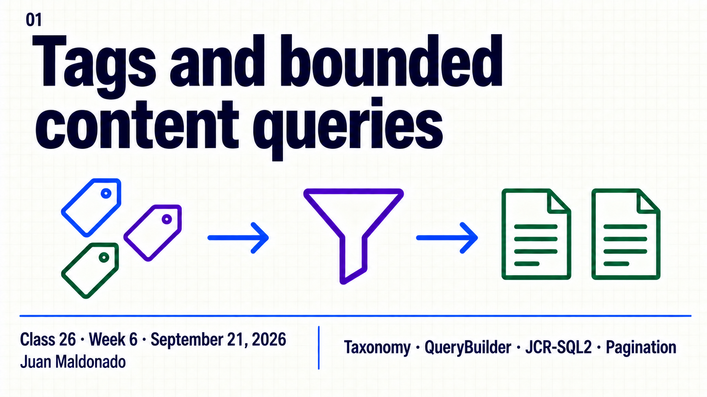
Topic summary
A useful content list starts with a selection contract: a content root, a node type and explicit classification. AEM tags provide IDs stored on content, while display titles help authors choose them. For pages, the query returns a cq:Page and reads tags from its jcr:content child.
QueryBuilder expresses constraints as predicates; JCR-SQL2 gives another readable expression of the selection. This session compares both against a small supplied dataset, then separates ordering, result windows and full-text filtering. A small response does not establish low query cost, and an Author result does not establish public availability.
- Define included and excluded content before querying.
- Separate tag ID, display title and page assignment.
- Read path, type and relative property constraints.
- Apply explicit ordering, limit and offset.
- Distinguish exact tag membership from indexed text search.
- Interpret results in the current repository and identity.
30-minute agenda
| Time | Slides | Focus |
|---|---|---|
| 0–5 | 1–3 | Selection contract and taxonomy. |
| 5–12 | 4–6 | Predicates and equivalent SQL2 selection. |
| 12–17 | 7–9 | Ordering, pagination, full-text and response. |
| 17–27 | 10 | Local Author example. |
| 27–30 | 11–12 | Key takeaways and questions. |
For a 60-minute session, add 20 minutes of guided query variations and 10 minutes of questions. The supplied example starts from an installed baseline and does not depend on previous practices.
Complete slide deck
Copy each complete image to PowerPoint or download its PNG.
{kind=link}
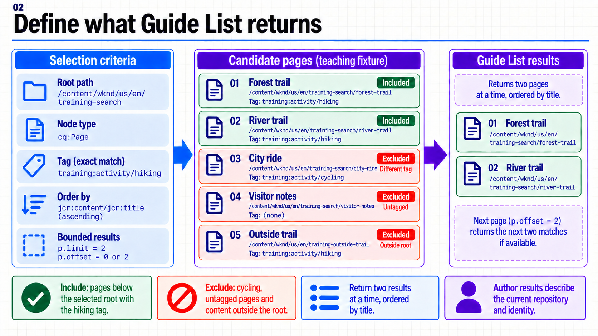
{kind=link}
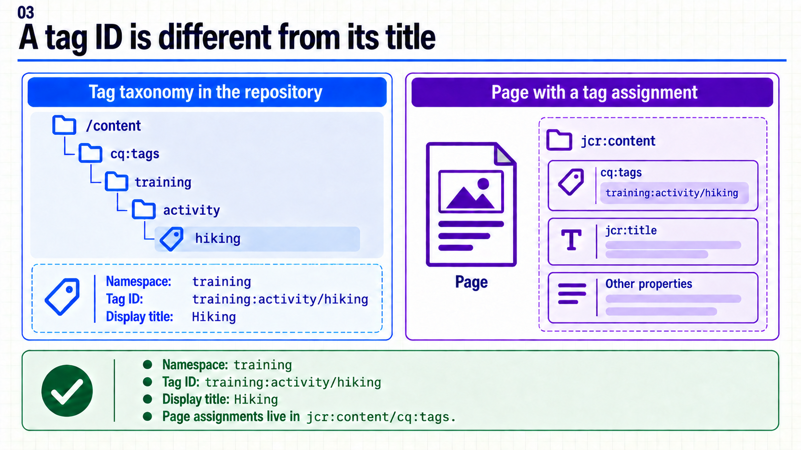
{kind=link}
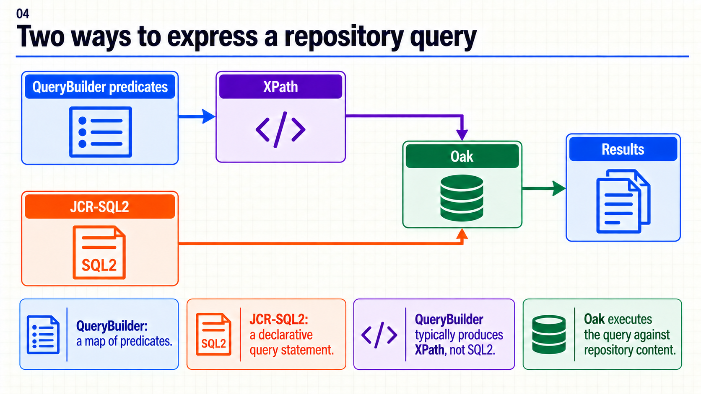
{kind=link}
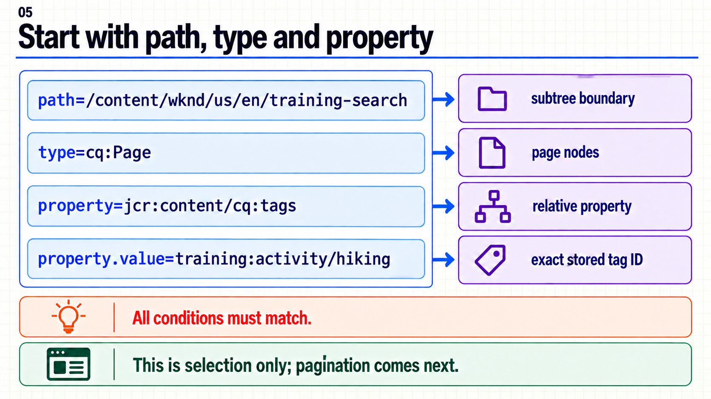
{kind=link}
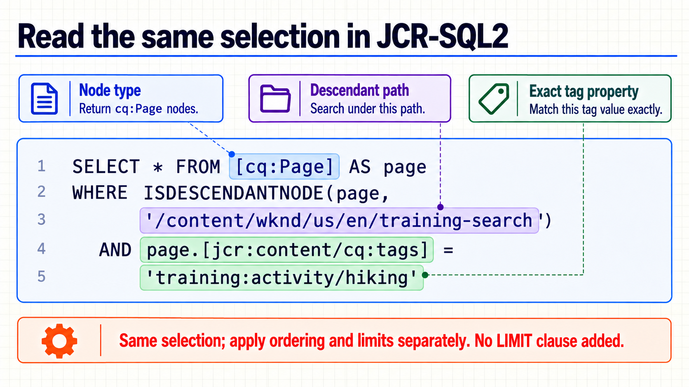
{kind=link}
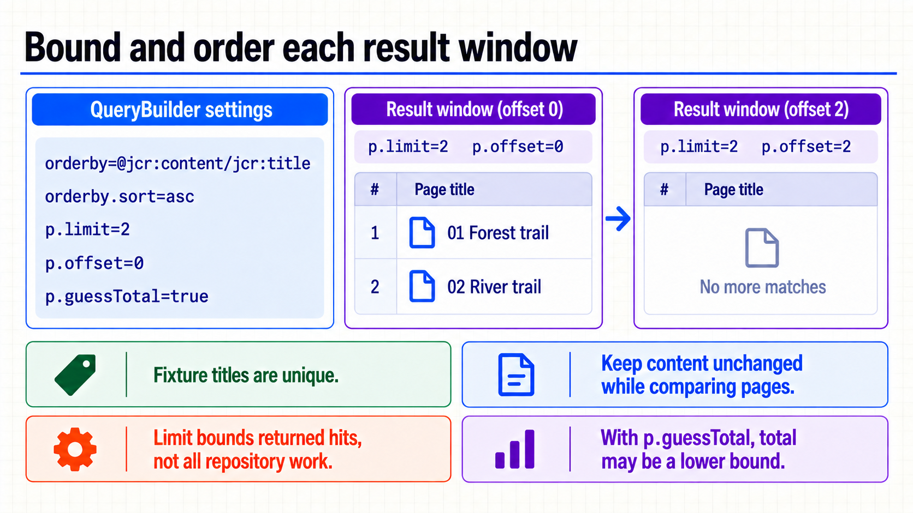
{kind=link}
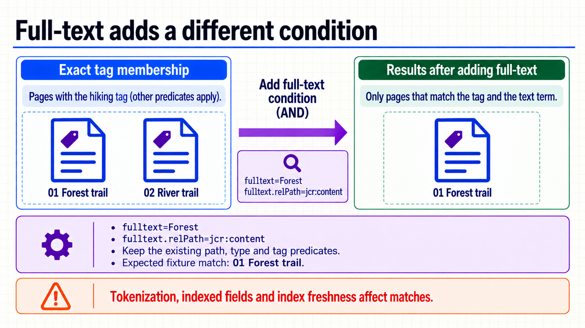
{kind=link}
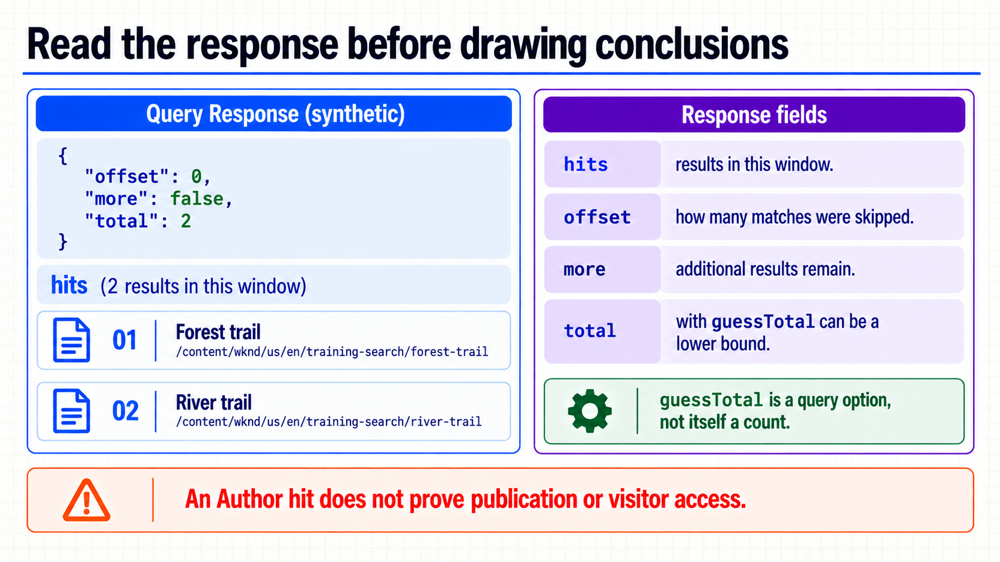
{kind=link}
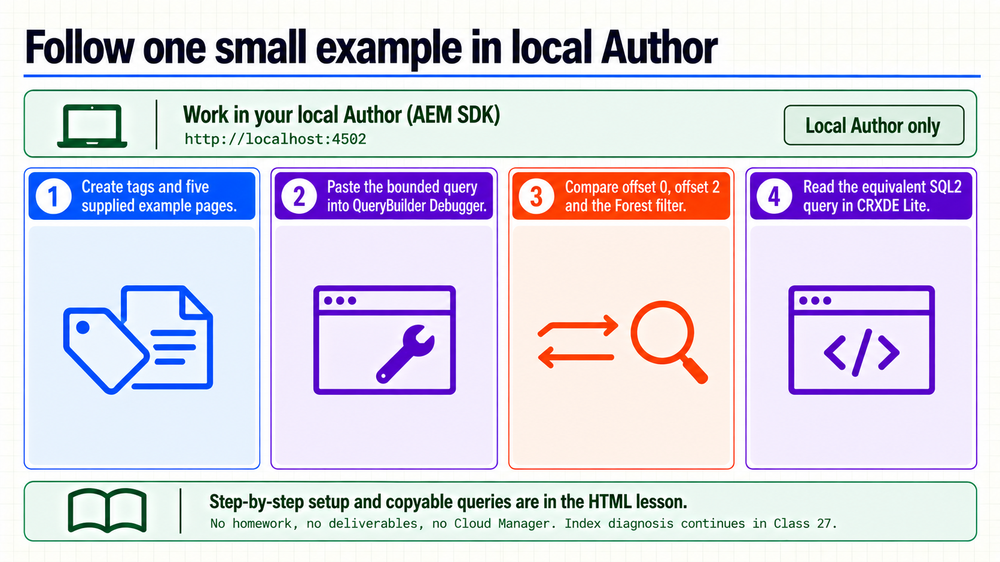
{kind=link}
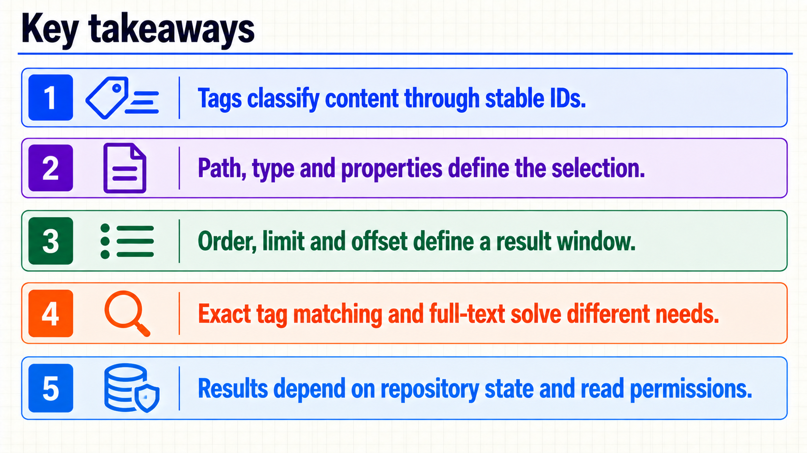
{kind=link}
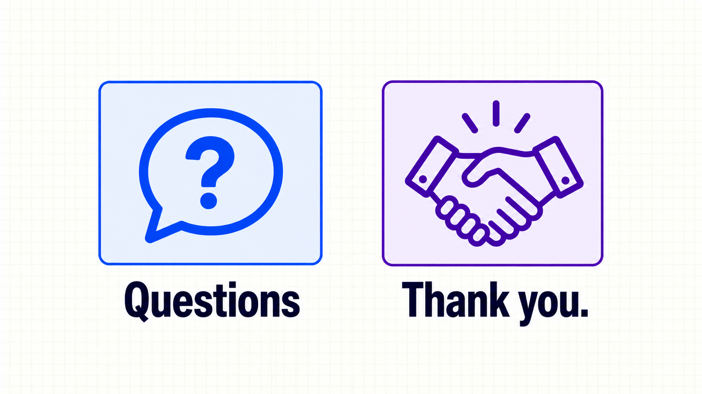
{kind=link}
Consultas copiables y ejemplo local
QueryBuilder
Download querybuilder.properties
path=/content/wknd/us/en/training-search
type=cq:Page
property=jcr:content/cq:tags
property.value=training:activity/hiking
orderby=@jcr:content/jcr:title
orderby.sort=asc
p.limit=2
p.offset=0
p.guessTotal=true
JCR-SQL2
SELECT * FROM [cq:Page] AS page
WHERE ISDESCENDANTNODE(page, '/content/wknd/us/en/training-search')
AND page.[jcr:content/cq:tags] = 'training:activity/hiking'
ORDER BY page.[jcr:content/jcr:title] ASC
Full-text: añadir a la consulta base
fulltext=Forest
fulltext.relPath=jcr:contentSQL2: aplicar Limit = 2 y Offset = 0 en la herramienta, cuando estén disponibles. La API JCR usa setLimit y setOffset; el archivo SQL2 define selección y orden.
7. Ejemplo completo en Author local
Punto de partida suministrado
Necesitas un Author SDK local con WKND o un sitio creado con Archetype, una plantilla de página habilitada y una cuenta local con permisos para crear páginas y tags. No necesitas Guide List implementada, servicios Java, Cloud Manager ni prácticas previas. Las rutas de WKND siguientes son rutas del ejemplo a crear; no se presupone que existan.
Si usas Archetype, identifica tu raíz de idioma en Sites y reemplaza /content/wknd/us/en por esa raíz en ambos archivos de consulta y en la tabla. El instructor prepara este mismo conjunto antes de clase y lo demuestra aunque nadie haya hecho práctica. Si una página o un namespace ya existen con otros datos, usa un nombre de prueba distinto y ajusta las consultas; no reemplaces contenido ajeno.
A. Crear la taxonomía
- Inicia sesión en tu Author, normalmente
http://localhost:4502. - Abre Tools → General → Tagging. Crea un namespace con título
Trainingy nombretraining, o reutilízalo si pertenece a este ejemplo. - Dentro de Training crea un tag contenedor con título
Activity, nombreactivity. - Dentro de Activity crea
Hikingcon nombrehikingyCyclingcon nombrecycling. - Comprueba sus IDs:
training:activity/hikingytraining:activity/cycling. El título no sustituye al campo Name.
La creación necesita permisos sobre la taxonomía. Si faltan, el instructor suministra estos tags en el baseline local; no se resuelve concediendo permisos globales a visitantes. Administrar tags — Adobe.
B. Crear páginas y asignar tags
- En Sites, entra a la raíz de idioma del sitio. Crea una página padre con título
Training searchy nombretraining-search, usando la plantilla de página habilitada de tu baseline. - Dentro de ella crea las primeras cuatro páginas de la tabla. La quinta se crea al lado de Training search, fuera de esa raíz.
- En cada página abre Properties → Basic → Tags y elige el tag indicado con el picker. Guarda con Save & Close. Deja sin tag
Visitor notesy la página padre; elimina únicamente tags heredados de una copia de prueba si los hubiera. Es preferible crear estas páginas nuevas. - Comprueba nombres, títulos y selección de tags antes de consultar. Los prefijos 01–05 son parte del título, no del nombre de nodo.
Ruta respecto de /content/wknd/us/en |
Título exacto | Tag | Consulta base |
|---|---|---|---|
training-search/forest-trail |
01 Forest trail |
Hiking | Incluida. |
training-search/river-trail |
02 River trail |
Hiking | Incluida. |
training-search/city-ride |
03 City ride |
Cycling | Excluida por tag. |
training-search/visitor-notes |
04 Visitor notes |
Ninguno | Excluida por tag ausente. |
training-outside-trail |
05 Outside trail |
Hiking | Excluida por ruta. |
En CRXDE Lite local (http://localhost:4502/crx/de/index.jsp), inspecciona sin editar el nodo .../forest-trail/jcr:content: jcr:title debe ser 01 Forest trail y cq:tags debe contener training:activity/hiking. La asignación se hace desde el picker, no creando a mano una propiedad con un título o un ID inexistente.
C. Ejecutar QueryBuilder
- Abre
http://localhost:4502/libs/cq/search/content/querydebug.htmlcon la misma cuenta local. - Reemplaza el contenido del formulario por la consulta completa de el bloque QueryBuilder de arriba. Si aparece Query is given as URL, déjalo desactivado al pegar líneas
clave=valor. - Pulsa Search. Deben aparecer
forest-trailyriver-trailen ese orden. Las rutas de los hits corresponden a páginas, no a sus nodosjcr:content. - Cambia únicamente
p.offseta2y repite. Debe quedar vacío porque sólo hay dos coincidencias. - Vuelve a offset
0. Para ver dos ventanas no vacías sin crear más contenido, cambia temporalmentep.limita1: offset0devuelve Forest y offset1devuelve River. Restaura límite2al terminar. - Añade las dos líneas de full-text de el bloque Full-text de arriba y busca de nuevo. El resultado esperado es Forest. Quita esas líneas antes de contrastar con SQL2.
El Debugger muestra detalles útiles para aprender. Si quieres observar directamente el JSON, abre el endpoint local con los mismos parámetros codificados en la URL; el HTML de esta guía incluye un enlace preparado. Estas herramientas sirven para el SDK autenticado; no se pide exponerlas en el sitio público. Debugger de QueryBuilder — Adobe.
D. Leer la selección en SQL2
- En CRXDE Lite, abre la herramienta de consultas (Tools → Query, según la versión) y elige JCR-SQL2 como lenguaje.
- Pega
guides.sql2, ajustando la raíz si usas otro sitio. - Configura Limit = 2 y Offset = 0 cuando la consola ofrezca esos campos. Si tu versión no los expone, conserva el conjunto de cinco páginas y compara sólo selección y orden: la ventana no queda demostrada por ese formulario. Los controles portables están en la API JCR descrita en la guía en español.
- Ejecuta y compara las rutas: Forest, River. No compares con la variante QueryBuilder que todavía contiene
fulltext=Forest.
Resultado esperado del ejemplo, no evidencia de ejecución: con la misma identidad, contenido guardado e índices actualizados, las dos expresiones seleccionan las mismas dos páginas. Las instrucciones y sintaxis se contrastaron con fuentes oficiales; no se ejecutaron en tu SDK durante la preparación del material.
8. Si la salida no coincide
| Síntoma | Comprobación concreta |
|---|---|
| Cero resultados desde la primera búsqueda. | Ruta real del sitio, tipo cq:Page, ID exacto y propiedad en jcr:content. |
| Sólo falla después de paginar. | Offset actual; vuelve a 0 al cambiar filtros. |
| La página Cycling aparece. | cq:tags es multivalor: comprueba si también tiene Hiking. |
| Aparece Outside trail. | Verifica que la raíz termina en training-search, no en la raíz del sitio. |
| Full-text no devuelve Forest. | Título guardado, alcance jcr:content y actualización/cobertura del índice. |
| Resultados distintos entre herramientas. | Misma instancia, usuario, filtros, orden, offset y contenido; retira el full-text adicional. |
| Consulta lenta con sólo dos hits. | Conserva la consulta y sus condiciones; analiza el plan en la 27 antes de proponer un índice. |
| Funciona como administrador. | Eso no demuestra lectura con la identidad del visitante; se estudia en las sesiones 28–29. |
No cambies a / ni retires todos los límites para “encontrar algo”. Comprueba una condición cada vez dentro del conjunto de prueba. Un resultado en Author tampoco confirma presencia en Publish, publicación de dependencias ni acceso anónimo.
Abrir la consulta JSON en Author local (localhost:4502). Requiere haber creado el ejemplo WKND e iniciado sesión; adapta la URL para otro sitio.